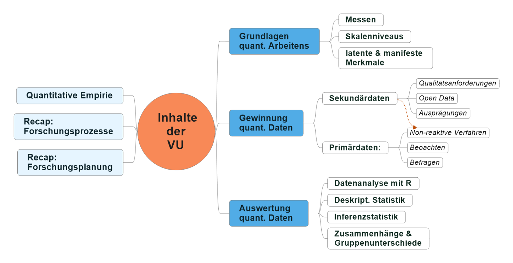

<!DOCTYPE html>
<html lang="" xml:lang="">
<head>

  <meta charset="utf-8" />
  <meta http-equiv="X-UA-Compatible" content="IE=edge" />
  <title>1 Ouvertüre (aka “Syllabus”) | How 2 do Things with Numbers (SS 2022)</title>
  <meta name="description" content="1 Ouvertüre (aka “Syllabus”) | How 2 do Things with Numbers (SS 2022)" />
  <meta name="generator" content="bookdown 0.24 and GitBook 2.6.7" />

  <meta property="og:title" content="1 Ouvertüre (aka “Syllabus”) | How 2 do Things with Numbers (SS 2022)" />
  <meta property="og:type" content="book" />
  
  
  
  

  <meta name="twitter:card" content="summary" />
  <meta name="twitter:title" content="1 Ouvertüre (aka “Syllabus”) | How 2 do Things with Numbers (SS 2022)" />
  
  
  

<meta name="author" content="Kami Höferl | https://orcid.org/0000-0002-5397-180X" />


  <meta name="viewport" content="width=device-width, initial-scale=1" />
  <meta name="apple-mobile-web-app-capable" content="yes" />
  <meta name="apple-mobile-web-app-status-bar-style" content="black" />
  
  
<link rel="prev" href="index.html"/>
<link rel="next" href="02_forschungsprozess.html"/>
<script src="libs/header-attrs-2.12/header-attrs.js"></script>
<script src="libs/jquery-3.6.0/jquery-3.6.0.min.js"></script>
<script src="https://cdn.jsdelivr.net/npm/fuse.js@6.4.6/dist/fuse.min.js"></script>
<link href="libs/gitbook-2.6.7/css/style.css" rel="stylesheet" />
<link href="libs/gitbook-2.6.7/css/plugin-table.css" rel="stylesheet" />
<link href="libs/gitbook-2.6.7/css/plugin-bookdown.css" rel="stylesheet" />
<link href="libs/gitbook-2.6.7/css/plugin-highlight.css" rel="stylesheet" />
<link href="libs/gitbook-2.6.7/css/plugin-search.css" rel="stylesheet" />
<link href="libs/gitbook-2.6.7/css/plugin-fontsettings.css" rel="stylesheet" />
<link href="libs/gitbook-2.6.7/css/plugin-clipboard.css" rel="stylesheet" />


<link href="libs/anchor-sections-1.1.0/anchor-sections.css" rel="stylesheet" />
<link href="libs/anchor-sections-1.1.0/anchor-sections-hash.css" rel="stylesheet" />
<script src="libs/anchor-sections-1.1.0/anchor-sections.js"></script>
<html>

  <head>
  <script>
    window.addEventListener("load", () => {
        const enabled = document.querySelectorAll(".fullscreen-enabled");
        for (let i = 0; i < enabled.length; i++) {
            enabled[i].style.cursor = "pointer";
            enabled[i].onclick = () => {
                enabled[i].requestFullscreen();
            };
        }
    });
  </script>
  </head>

  <body>
  <!-- body content here -->
  </body>

</html>


<style type="text/css">
pre > code.sourceCode { white-space: pre; position: relative; }
pre > code.sourceCode > span { display: inline-block; line-height: 1.25; }
pre > code.sourceCode > span:empty { height: 1.2em; }
.sourceCode { overflow: visible; }
code.sourceCode > span { color: inherit; text-decoration: inherit; }
pre.sourceCode { margin: 0; }
@media screen {
div.sourceCode { overflow: auto; }
}
@media print {
pre > code.sourceCode { white-space: pre-wrap; }
pre > code.sourceCode > span { text-indent: -5em; padding-left: 5em; }
}
pre.numberSource code
  { counter-reset: source-line 0; }
pre.numberSource code > span
  { position: relative; left: -4em; counter-increment: source-line; }
pre.numberSource code > span > a:first-child::before
  { content: counter(source-line);
    position: relative; left: -1em; text-align: right; vertical-align: baseline;
    border: none; display: inline-block;
    -webkit-touch-callout: none; -webkit-user-select: none;
    -khtml-user-select: none; -moz-user-select: none;
    -ms-user-select: none; user-select: none;
    padding: 0 4px; width: 4em;
    color: #aaaaaa;
  }
pre.numberSource { margin-left: 3em; border-left: 1px solid #aaaaaa;  padding-left: 4px; }
div.sourceCode
  {   }
@media screen {
pre > code.sourceCode > span > a:first-child::before { text-decoration: underline; }
}
code span.al { color: #ff0000; font-weight: bold; } /* Alert */
code span.an { color: #60a0b0; font-weight: bold; font-style: italic; } /* Annotation */
code span.at { color: #7d9029; } /* Attribute */
code span.bn { color: #40a070; } /* BaseN */
code span.bu { } /* BuiltIn */
code span.cf { color: #007020; font-weight: bold; } /* ControlFlow */
code span.ch { color: #4070a0; } /* Char */
code span.cn { color: #880000; } /* Constant */
code span.co { color: #60a0b0; font-style: italic; } /* Comment */
code span.cv { color: #60a0b0; font-weight: bold; font-style: italic; } /* CommentVar */
code span.do { color: #ba2121; font-style: italic; } /* Documentation */
code span.dt { color: #902000; } /* DataType */
code span.dv { color: #40a070; } /* DecVal */
code span.er { color: #ff0000; font-weight: bold; } /* Error */
code span.ex { } /* Extension */
code span.fl { color: #40a070; } /* Float */
code span.fu { color: #06287e; } /* Function */
code span.im { } /* Import */
code span.in { color: #60a0b0; font-weight: bold; font-style: italic; } /* Information */
code span.kw { color: #007020; font-weight: bold; } /* Keyword */
code span.op { color: #666666; } /* Operator */
code span.ot { color: #007020; } /* Other */
code span.pp { color: #bc7a00; } /* Preprocessor */
code span.sc { color: #4070a0; } /* SpecialChar */
code span.ss { color: #bb6688; } /* SpecialString */
code span.st { color: #4070a0; } /* String */
code span.va { color: #19177c; } /* Variable */
code span.vs { color: #4070a0; } /* VerbatimString */
code span.wa { color: #60a0b0; font-weight: bold; font-style: italic; } /* Warning */
</style>

<style type="text/css">
/* Used with Pandoc 2.11+ new --citeproc when CSL is used */
div.csl-bib-body { }
div.csl-entry {
  clear: both;
}
.hanging div.csl-entry {
  margin-left:2em;
  text-indent:-2em;
}
div.csl-left-margin {
  min-width:2em;
  float:left;
}
div.csl-right-inline {
  margin-left:2em;
  padding-left:1em;
}
div.csl-indent {
  margin-left: 2em;
}
</style>

<link rel="stylesheet" href="style.css" type="text/css" />
</head>

<body>


  <div class="book without-animation with-summary font-size-2 font-family-1" data-basepath=".">

    <div class="book-summary">
      <nav role="navigation">

<ul class="summary">
<li><a href="index.html#howdy">Howdy<span></span></a></li>
<li class="chapter" data-level="1" data-path="01_syllabus.html"><a href="01_syllabus.html"><i class="fa fa-check"></i><b>1</b> Ouvertüre (aka “Syllabus”)<span></span></a>
<ul>
<li class="chapter" data-level="1.1" data-path="01_syllabus.html"><a href="01_syllabus.html#lernziele"><i class="fa fa-check"></i><b>1.1</b> Lernziele<span></span></a></li>
<li class="chapter" data-level="1.2" data-path="01_syllabus.html"><a href="01_syllabus.html#zeitplanung"><i class="fa fa-check"></i><b>1.2</b> Zeitplanung<span></span></a></li>
<li class="chapter" data-level="1.3" data-path="01_syllabus.html"><a href="01_syllabus.html#rulez-of-the-game"><i class="fa fa-check"></i><b>1.3</b> Rulez of the Game<span></span></a></li>
<li class="chapter" data-level="1.4" data-path="01_syllabus.html"><a href="01_syllabus.html#übungsteile"><i class="fa fa-check"></i><b>1.4</b> Übungsteile<span></span></a></li>
<li class="chapter" data-level="1.5" data-path="01_syllabus.html"><a href="01_syllabus.html#bewertungskriterien"><i class="fa fa-check"></i><b>1.5</b> Bewertungskriterien<span></span></a></li>
<li class="chapter" data-level="1.6" data-path="01_syllabus.html"><a href="01_syllabus.html#formelles-zu-den-übungsarbeiten"><i class="fa fa-check"></i><b>1.6</b> Formelles zu den Übungsarbeiten<span></span></a></li>
<li class="chapter" data-level="1.7" data-path="01_syllabus.html"><a href="01_syllabus.html#empfehlung-zur-eingesetzten-software"><i class="fa fa-check"></i><b>1.7</b> Empfehlung zur eingesetzten Software<span></span></a></li>
<li class="chapter" data-level="1.8" data-path="01_syllabus.html"><a href="01_syllabus.html#ausgewählte-hilfestellungen-zum-thema-r-und-rstudio"><i class="fa fa-check"></i><b>1.8</b> Ausgewählte Hilfestellungen zum Thema R und RStudio<span></span></a></li>
<li class="chapter" data-level="1.9" data-path="01_syllabus.html"><a href="01_syllabus.html#literatur"><i class="fa fa-check"></i><b>1.9</b> Literatur zur Lehrveranstaltung<span></span></a></li>
</ul></li>
<li class="chapter" data-level="2" data-path="02_forschungsprozess.html"><a href="02_forschungsprozess.html"><i class="fa fa-check"></i><b>2</b> Wege zum empirischen Forschen<span></span></a>
<ul>
<li><a href="02_forschungsprozess.html#zielsetzung-dieser-einheit">📢 Zielsetzung dieser Einheit<span></span></a></li>
<li class="chapter" data-level="2.1" data-path="02_forschungsprozess.html"><a href="02_forschungsprozess.html#wozu-empirie"><i class="fa fa-check"></i><b>2.1</b> Wozu Empirie?<span></span></a></li>
<li class="chapter" data-level="2.2" data-path="02_forschungsprozess.html"><a href="02_forschungsprozess.html#aber-wie"><i class="fa fa-check"></i><b>2.2</b> Aber wie?<span></span></a></li>
<li class="chapter" data-level="2.3" data-path="02_forschungsprozess.html"><a href="02_forschungsprozess.html#hauptsache-daten"><i class="fa fa-check"></i><b>2.3</b> Hauptsache Daten?<span></span></a></li>
</ul></li>
<li class="chapter" data-level="3" data-path="03_messen.html"><a href="03_messen.html"><i class="fa fa-check"></i><b>3</b> Warmup: Messen und Skalen<span></span></a>
<ul>
<li><a href="03_messen.html#zielsetzung-dieser-einheit-1">📢 Zielsetzung dieser Einheit<span></span></a></li>
<li class="chapter" data-level="3.1" data-path="03_messen.html"><a href="03_messen.html#was-passiert-beim-messen"><i class="fa fa-check"></i><b>3.1</b> Was passiert beim Messen?<span></span></a></li>
<li class="chapter" data-level="3.2" data-path="03_messen.html"><a href="03_messen.html#skalenniveaus-reloaded"><i class="fa fa-check"></i><b>3.2</b> Skalenniveaus (reloaded)<span></span></a></li>
</ul></li>
<li class="chapter" data-level="4" data-path="04_messen_primaer_sekundaerdaten.html"><a href="04_messen_primaer_sekundaerdaten.html"><i class="fa fa-check"></i><b>4</b> Sekundärdaten gewinnen<span></span></a>
<ul>
<li><a href="04_messen_primaer_sekundaerdaten.html#zielsetzung-dieser-einheit-2">📢 Zielsetzung dieser Einheit<span></span></a></li>
<li class="chapter" data-level="4.1" data-path="04_messen_primaer_sekundaerdaten.html"><a href="04_messen_primaer_sekundaerdaten.html#sekundär-daten-gewinnen"><i class="fa fa-check"></i><b>4.1</b> (Sekundär-)Daten gewinnen<span></span></a>
<ul>
<li class="chapter" data-level="4.1.1" data-path="04_messen_primaer_sekundaerdaten.html"><a href="04_messen_primaer_sekundaerdaten.html#ein-technischer-aspekt-der-gewinnung-von-sekundärdaten"><i class="fa fa-check"></i><b>4.1.1</b> Ein technischer Aspekt der Gewinnung von Sekundärdaten<span></span></a></li>
</ul></li>
<li class="chapter" data-level="4.2" data-path="04_messen_primaer_sekundaerdaten.html"><a href="04_messen_primaer_sekundaerdaten.html#zur-qualität-von-sekundärdaten"><i class="fa fa-check"></i><b>4.2</b> Zur Qualität von Sekundärdaten<span></span></a></li>
<li class="chapter" data-level="4.3" data-path="04_messen_primaer_sekundaerdaten.html"><a href="04_messen_primaer_sekundaerdaten.html#sekundärdaten-als-open-data-nutzen-können"><i class="fa fa-check"></i><b>4.3</b> Sekundärdaten als “Open Data” nutzen (können)<span></span></a></li>
</ul></li>
<li class="chapter" data-level="5" data-path="05_primaererhebung.html"><a href="05_primaererhebung.html"><i class="fa fa-check"></i><b>5</b> Primärdaten gewinnen<span></span></a>
<ul>
<li><a href="05_primaererhebung.html#zielsetzung-dieser-einheit-3">📢 Zielsetzung dieser Einheit<span></span></a></li>
<li class="chapter" data-level="5.1" data-path="05_primaererhebung.html"><a href="05_primaererhebung.html#nicht-rekative-verfahren"><i class="fa fa-check"></i><b>5.1</b> Nicht-rekative Verfahren<span></span></a></li>
<li class="chapter" data-level="5.2" data-path="05_primaererhebung.html"><a href="05_primaererhebung.html#beobachtungen"><i class="fa fa-check"></i><b>5.2</b> Beobachtungen<span></span></a></li>
<li class="chapter" data-level="5.3" data-path="05_primaererhebung.html"><a href="05_primaererhebung.html#befragungen"><i class="fa fa-check"></i><b>5.3</b> Befragungen<span></span></a></li>
<li class="chapter" data-level="5.4" data-path="05_primaererhebung.html"><a href="05_primaererhebung.html#special-die-stichprobenziehung"><i class="fa fa-check"></i><b>5.4</b> Special: Die Stichprobenziehung<span></span></a></li>
</ul></li>
<li class="chapter" data-level="6" data-path="06_basics_datananalyse.html"><a href="06_basics_datananalyse.html"><i class="fa fa-check"></i><b>6</b> Die Basics zur Datenanalyse<span></span></a>
<ul>
<li><a href="06_basics_datananalyse.html#zielsetzung-dieser-einheit-4">📢 Zielsetzung dieser Einheit<span></span></a></li>
<li class="chapter" data-level="6.1" data-path="06_basics_datananalyse.html"><a href="06_basics_datananalyse.html#daten-analysieren---aber-wie"><i class="fa fa-check"></i><b>6.1</b> Daten analysieren - aber wie?<span></span></a></li>
<li class="chapter" data-level="6.2" data-path="06_basics_datananalyse.html"><a href="06_basics_datananalyse.html#die-hilfsmittel-r-rstudio"><i class="fa fa-check"></i><b>6.2</b> Die Hilfsmittel R &amp; RStudio<span></span></a></li>
<li class="chapter" data-level="6.3" data-path="06_basics_datananalyse.html"><a href="06_basics_datananalyse.html#grundlegende-datenstrukturen-in-r"><i class="fa fa-check"></i><b>6.3</b> Grundlegende Datenstrukturen in R<span></span></a></li>
<li class="chapter" data-level="6.4" data-path="06_basics_datananalyse.html"><a href="06_basics_datananalyse.html#daten-im--und-exportieren"><i class="fa fa-check"></i><b>6.4</b> Daten im- und exportieren<span></span></a>
<ul>
<li class="chapter" data-level="6.4.1" data-path="06_basics_datananalyse.html"><a href="06_basics_datananalyse.html#der-datenimport"><i class="fa fa-check"></i><b>6.4.1</b> Der Datenimport<span></span></a></li>
<li class="chapter" data-level="6.4.2" data-path="06_basics_datananalyse.html"><a href="06_basics_datananalyse.html#der-datenexport"><i class="fa fa-check"></i><b>6.4.2</b> Der Datenexport<span></span></a></li>
</ul></li>
</ul></li>
<li class="chapter" data-level="7" data-path="07_n_kategoriale_variablen.html"><a href="07_n_kategoriale_variablen.html"><i class="fa fa-check"></i><b>7</b> Die Häufigkeitsanalyse kategorialer Daten<span></span></a>
<ul>
<li><a href="07_n_kategoriale_variablen.html#zielsetzung-dieser-einheit-5">📢 Zielsetzung dieser Einheit<span></span></a></li>
<li class="chapter" data-level="7.1" data-path="07_n_kategoriale_variablen.html"><a href="07_n_kategoriale_variablen.html#katdatasetup"><i class="fa fa-check"></i><b>7.1</b> Kategoriale Daten auswerten<span></span></a></li>
<li class="chapter" data-level="7.2" data-path="07_n_kategoriale_variablen.html"><a href="07_n_kategoriale_variablen.html#vorbereitendes"><i class="fa fa-check"></i><b>7.2</b> Vorbereitendes<span></span></a></li>
<li class="chapter" data-level="7.3" data-path="07_n_kategoriale_variablen.html"><a href="07_n_kategoriale_variablen.html#katdatamanipul"><i class="fa fa-check"></i><b>7.3</b> Der Datenimport, die Datenaufbereitung und -validierung<span></span></a></li>
<li class="chapter" data-level="7.4" data-path="07_n_kategoriale_variablen.html"><a href="07_n_kategoriale_variablen.html#die-häufikgeitsanalyse-einer-variablen"><i class="fa fa-check"></i><b>7.4</b> Die Häufikgeitsanalyse einer Variablen<span></span></a></li>
<li class="chapter" data-level="7.5" data-path="07_n_kategoriale_variablen.html"><a href="07_n_kategoriale_variablen.html#katdatabivarn"><i class="fa fa-check"></i><b>7.5</b> Die Häufigkeitsanalyse zweier kategorialer Variablen<span></span></a></li>
</ul></li>
<li class="chapter" data-level="8" data-path="08_zusammenhaenge_kategoriale_variablen.html"><a href="08_zusammenhaenge_kategoriale_variablen.html"><i class="fa fa-check"></i><b>8</b> Zusammenhänge zwischen kategorialen Variablen<span></span></a>
<ul>
<li><a href="08_zusammenhaenge_kategoriale_variablen.html#zielsetzung-dieser-einheit-6">📢 Zielsetzung dieser Einheit<span></span></a></li>
<li class="chapter" data-level="8.1" data-path="08_zusammenhaenge_kategoriale_variablen.html"><a href="08_zusammenhaenge_kategoriale_variablen.html#die-ausgangslage"><i class="fa fa-check"></i><b>8.1</b> Die Ausgangslage<span></span></a></li>
<li class="chapter" data-level="8.2" data-path="08_zusammenhaenge_kategoriale_variablen.html"><a href="08_zusammenhaenge_kategoriale_variablen.html#zusammenhänge-zwischen-zwei-kategorialen-variablen-messen---die-theorie"><i class="fa fa-check"></i><b>8.2</b> Zusammenhänge zwischen zwei kategorialen Variablen messen - die Theorie<span></span></a></li>
<li class="chapter" data-level="8.3" data-path="08_zusammenhaenge_kategoriale_variablen.html"><a href="08_zusammenhaenge_kategoriale_variablen.html#überprüfung-des-zusammenhangs-zwischen-politischer-orientierung-und-angemessenheit-des-pandemiemanagements"><i class="fa fa-check"></i><b>8.3</b> Überprüfung des Zusammenhangs zwischen politischer Orientierung und Angemessenheit des Pandemiemanagements<span></span></a></li>
<li class="chapter" data-level="8.4" data-path="08_zusammenhaenge_kategoriale_variablen.html"><a href="08_zusammenhaenge_kategoriale_variablen.html#charakterisierung-des-zusammenhang-mittels-der-pearson-residuen"><i class="fa fa-check"></i><b>8.4</b> Charakterisierung des Zusammenhang mittels der Pearson Residuen<span></span></a></li>
<li class="chapter" data-level="8.5" data-path="08_zusammenhaenge_kategoriale_variablen.html"><a href="08_zusammenhaenge_kategoriale_variablen.html#beurteilung-der-stärke-des-zusammenhangs-mit-cramers-v"><i class="fa fa-check"></i><b>8.5</b> Beurteilung der Stärke des Zusammenhangs mit Cramers V<span></span></a></li>
</ul></li>
<li class="chapter" data-level="9" data-path="09_deskriptive_statistik_metrisch.html"><a href="09_deskriptive_statistik_metrisch.html"><i class="fa fa-check"></i><b>9</b> Deskriptive Statistik für metrische Daten<span></span></a>
<ul>
<li><a href="09_deskriptive_statistik_metrisch.html#zielsetzung-dieser-einheit-7">📢 Zielsetzung dieser Einheit<span></span></a></li>
<li class="chapter" data-level="9.1" data-path="09_deskriptive_statistik_metrisch.html"><a href="09_deskriptive_statistik_metrisch.html#ausgangDeskriptivMetrisch"><i class="fa fa-check"></i><b>9.1</b> Die Ausgangslage<span></span></a></li>
<li class="chapter" data-level="9.2" data-path="09_deskriptive_statistik_metrisch.html"><a href="09_deskriptive_statistik_metrisch.html#der-datenimport-die-datenaufbereitung-und--validierung"><i class="fa fa-check"></i><b>9.2</b> Der Datenimport, die Datenaufbereitung und -validierung<span></span></a></li>
<li class="chapter" data-level="9.3" data-path="09_deskriptive_statistik_metrisch.html"><a href="09_deskriptive_statistik_metrisch.html#ein-blick-auf-klassische-lage--und-streuungsparameter"><i class="fa fa-check"></i><b>9.3</b> Ein Blick auf klassische Lage- und Streuungsparameter<span></span></a></li>
<li class="chapter" data-level="9.4" data-path="09_deskriptive_statistik_metrisch.html"><a href="09_deskriptive_statistik_metrisch.html#exkurs-für-motivierte-geographinnen-räumlich-explizite-deskription"><i class="fa fa-check"></i><b>9.4</b> Exkurs für motivierte GeographInnen: Räumlich explizite Deskription<span></span></a></li>
<li class="chapter" data-level="9.5" data-path="09_deskriptive_statistik_metrisch.html"><a href="09_deskriptive_statistik_metrisch.html#lage--und-streuungsparameter-graphisch-darstellen"><i class="fa fa-check"></i><b>9.5</b> Lage- und Streuungsparameter graphisch darstellen<span></span></a>
<ul>
<li class="chapter" data-level="9.5.1" data-path="09_deskriptive_statistik_metrisch.html"><a href="09_deskriptive_statistik_metrisch.html#histogramme"><i class="fa fa-check"></i><b>9.5.1</b> <strong>Histogramme</strong><span></span></a></li>
<li class="chapter" data-level="9.5.2" data-path="09_deskriptive_statistik_metrisch.html"><a href="09_deskriptive_statistik_metrisch.html#boxplots"><i class="fa fa-check"></i><b>9.5.2</b> <strong>Boxplots</strong><span></span></a></li>
</ul></li>
<li class="chapter" data-level="9.6" data-path="09_deskriptive_statistik_metrisch.html"><a href="09_deskriptive_statistik_metrisch.html#ein-erster-blick-auf-mögliche-zusammenhänge"><i class="fa fa-check"></i><b>9.6</b> Ein erster Blick auf mögliche Zusammenhänge<span></span></a></li>
</ul></li>
<li class="chapter" data-level="10" data-path="10_metrische_zusammenhaenge.html"><a href="10_metrische_zusammenhaenge.html"><i class="fa fa-check"></i><b>10</b> Zusammenhänge zwischen zwei metrischen Variablen<span></span></a>
<ul>
<li><a href="10_metrische_zusammenhaenge.html#zielsetzung-dieser-einheit-8">📢 Zielsetzung dieser Einheit<span></span></a></li>
<li class="chapter" data-level="10.1" data-path="10_metrische_zusammenhaenge.html"><a href="10_metrische_zusammenhaenge.html#die-ausgangslage-1"><i class="fa fa-check"></i><b>10.1</b> Die Ausgangslage<span></span></a></li>
<li class="chapter" data-level="10.2" data-path="10_metrische_zusammenhaenge.html"><a href="10_metrische_zusammenhaenge.html#datenimport-und--aufbereitung"><i class="fa fa-check"></i><b>10.2</b> Datenimport und -aufbereitung<span></span></a></li>
<li class="chapter" data-level="10.3" data-path="10_metrische_zusammenhaenge.html"><a href="10_metrische_zusammenhaenge.html#den-zusammenhang-graphisch-erkunden"><i class="fa fa-check"></i><b>10.3</b> Den Zusammenhang graphisch erkunden<span></span></a></li>
<li class="chapter" data-level="10.4" data-path="10_metrische_zusammenhaenge.html"><a href="10_metrische_zusammenhaenge.html#den-zusammenhang-numerisch-abbilden"><i class="fa fa-check"></i><b>10.4</b> Den Zusammenhang numerisch abbilden<span></span></a>
<ul>
<li class="chapter" data-level="10.4.1" data-path="10_metrische_zusammenhaenge.html"><a href="10_metrische_zusammenhaenge.html#überprüfung-der-normalverteilung"><i class="fa fa-check"></i><b>10.4.1</b> Überprüfung der Normalverteilung<span></span></a></li>
<li class="chapter" data-level="10.4.2" data-path="10_metrische_zusammenhaenge.html"><a href="10_metrische_zusammenhaenge.html#messung-des-zusammenhangs-zwischen-covid-erkrankungen-und-todesfällen-mittels-rangkorrelation"><i class="fa fa-check"></i><b>10.4.2</b> Messung des Zusammenhangs zwischen COVID Erkrankungen und Todesfällen mittels Rangkorrelation<span></span></a></li>
<li class="chapter" data-level="10.4.3" data-path="10_metrische_zusammenhaenge.html"><a href="10_metrische_zusammenhaenge.html#messung-des-zusammenhangs-zwischen-covid-erkrankungen-und-todesfällen-mittels-des-korrelationskoeffizienten-nach-pearson"><i class="fa fa-check"></i><b>10.4.3</b> Messung des Zusammenhangs zwischen COVID Erkrankungen und Todesfällen mittels des Korrelationskoeffizienten nach Pearson<span></span></a></li>
<li class="chapter" data-level="10.4.4" data-path="10_metrische_zusammenhaenge.html"><a href="10_metrische_zusammenhaenge.html#ermittlung-der-bundeslandspezifischen-rangkorrelationskoeffizienten"><i class="fa fa-check"></i><b>10.4.4</b> Ermittlung der bundeslandspezifischen Rangkorrelationskoeffizienten<span></span></a></li>
</ul></li>
<li class="chapter" data-level="10.5" data-path="10_metrische_zusammenhaenge.html"><a href="10_metrische_zusammenhaenge.html#lineare-regression-als-alternativer-zugang"><i class="fa fa-check"></i><b>10.5</b> Lineare Regression als alternativer Zugang<span></span></a></li>
<li class="chapter" data-level="10.6" data-path="10_metrische_zusammenhaenge.html"><a href="10_metrische_zusammenhaenge.html#konklusio"><i class="fa fa-check"></i><b>10.6</b> Konklusio<span></span></a></li>
</ul></li>
<li class="chapter" data-level="11" data-path="11_gruppenunterschiede_v2.html"><a href="11_gruppenunterschiede_v2.html"><i class="fa fa-check"></i><b>11</b> Gruppenunterschiede erforschen<span></span></a>
<ul>
<li><a href="11_gruppenunterschiede_v2.html#zielsetzung-dieser-einheit-9">📢 Zielsetzung dieser Einheit<span></span></a></li>
<li class="chapter" data-level="11.1" data-path="11_gruppenunterschiede_v2.html"><a href="11_gruppenunterschiede_v2.html#die-ausgangslage-2"><i class="fa fa-check"></i><b>11.1</b> Die Ausgangslage<span></span></a></li>
<li class="chapter" data-level="11.2" data-path="11_gruppenunterschiede_v2.html"><a href="11_gruppenunterschiede_v2.html#datenimport-und--aufbereitung-1"><i class="fa fa-check"></i><b>11.2</b> Datenimport und -aufbereitung<span></span></a></li>
<li class="chapter" data-level="11.3" data-path="11_gruppenunterschiede_v2.html"><a href="11_gruppenunterschiede_v2.html#vorbereitende-überlegungen"><i class="fa fa-check"></i><b>11.3</b> Vorbereitende Überlegungen<span></span></a>
<ul>
<li class="chapter" data-level="11.3.1" data-path="11_gruppenunterschiede_v2.html"><a href="11_gruppenunterschiede_v2.html#ermitteln-des-passenden-verfahrens"><i class="fa fa-check"></i><b>11.3.1</b> Ermitteln des passenden Verfahrens<span></span></a></li>
</ul></li>
<li class="chapter" data-level="11.4" data-path="11_gruppenunterschiede_v2.html"><a href="11_gruppenunterschiede_v2.html#gruppenunterschiede-bei-normalverteilten-variablen-mittels-varianzanalyse-untersuchen"><i class="fa fa-check"></i><b>11.4</b> Gruppenunterschiede bei normalverteilten Variablen mittels Varianzanalyse untersuchen<span></span></a>
<ul>
<li class="chapter" data-level="11.4.1" data-path="11_gruppenunterschiede_v2.html"><a href="11_gruppenunterschiede_v2.html#welch"><i class="fa fa-check"></i><b>11.4.1</b> Gruppenunterschiede bei Variablen mit Varianzheterogenität erkunden<span></span></a></li>
</ul></li>
<li class="chapter" data-level="11.5" data-path="11_gruppenunterschiede_v2.html"><a href="11_gruppenunterschiede_v2.html#gruppenunterschiede-bei-ordinalen-oder-nicht-normalverteilten-variablen"><i class="fa fa-check"></i><b>11.5</b> Gruppenunterschiede bei ordinalen oder nicht normalverteilten Variablen<span></span></a>
<ul>
<li class="chapter" data-level="11.5.1" data-path="11_gruppenunterschiede_v2.html"><a href="11_gruppenunterschiede_v2.html#vorbereitendes-1"><i class="fa fa-check"></i><b>11.5.1</b> Vorbereitendes<span></span></a></li>
<li class="chapter" data-level="11.5.2" data-path="11_gruppenunterschiede_v2.html"><a href="11_gruppenunterschiede_v2.html#eine-erster-blick-auf-die-politischen-gruppen-und-deren-sorge-vor-einer-ansteckung"><i class="fa fa-check"></i><b>11.5.2</b> Eine erster Blick auf die politischen Gruppen und deren Sorge vor einer Ansteckung<span></span></a></li>
<li class="chapter" data-level="11.5.3" data-path="11_gruppenunterschiede_v2.html"><a href="11_gruppenunterschiede_v2.html#gruppenunterschieden-mit-dem-kruskal-wallis-test-nachgehen"><i class="fa fa-check"></i><b>11.5.3</b> Gruppenunterschieden mit dem Kruskal-Wallis-Test nachgehen<span></span></a></li>
</ul></li>
</ul></li>
<li class="chapter" data-level="12" data-path="666_lit.html"><a href="666_lit.html"><i class="fa fa-check"></i><b>12</b> Quellen<span></span></a></li>
<li class="chapter" data-level="13" data-path="80_athome1.html"><a href="80_athome1.html"><i class="fa fa-check"></i><b>13</b> @Home1: Einen Fragebogen in Limesurvey umsetzen<span></span></a>
<ul>
<li><a href="80_athome1.html#zielsetzung">📢 Zielsetzung<span></span></a></li>
<li class="chapter" data-level="13.1" data-path="80_athome1.html"><a href="80_athome1.html#ausgangslage"><i class="fa fa-check"></i><b>13.1</b> Ausgangslage<span></span></a></li>
<li class="chapter" data-level="13.2" data-path="80_athome1.html"><a href="80_athome1.html#aufgabenstellung"><i class="fa fa-check"></i><b>13.2</b> Aufgabenstellung<span></span></a></li>
<li class="chapter" data-level="13.3" data-path="80_athome1.html"><a href="80_athome1.html#formelles"><i class="fa fa-check"></i><b>13.3</b> Formelles<span></span></a></li>
</ul></li>
<li class="chapter" data-level="14" data-path="81_athome2.html"><a href="81_athome2.html"><i class="fa fa-check"></i><b>14</b> @Home2: Eine einfache Quotenstichprobe<span></span></a>
<ul>
<li><a href="81_athome2.html#zielsetzung-1">📢 Zielsetzung<span></span></a></li>
<li class="chapter" data-level="14.1" data-path="81_athome2.html"><a href="81_athome2.html#ausgangslage-1"><i class="fa fa-check"></i><b>14.1</b> Ausgangslage<span></span></a></li>
<li class="chapter" data-level="14.2" data-path="81_athome2.html"><a href="81_athome2.html#aufgabenstellung-1"><i class="fa fa-check"></i><b>14.2</b> Aufgabenstellung<span></span></a></li>
<li class="chapter" data-level="14.3" data-path="81_athome2.html"><a href="81_athome2.html#formelles-1"><i class="fa fa-check"></i><b>14.3</b> Formelles<span></span></a></li>
</ul></li>
<li class="chapter" data-level="15" data-path="82_athome3.html"><a href="82_athome3.html"><i class="fa fa-check"></i><b>15</b> @Home3: Zusammenhänge und Unterschiede<span></span></a>
<ul>
<li><a href="82_athome3.html#zielsetzung-2">📢 Zielsetzung<span></span></a></li>
<li class="chapter" data-level="15.1" data-path="82_athome3.html"><a href="82_athome3.html#beispiel-a-covid-19-impfungen-in-österreich"><i class="fa fa-check"></i><b>15.1</b> Beispiel A: COVID-19 Impfungen in Österreich<span></span></a></li>
<li class="chapter" data-level="15.2" data-path="82_athome3.html"><a href="82_athome3.html#beispiel-b-bundesdeutsche-wahrnehmungen-zur-covid-19-pandemie"><i class="fa fa-check"></i><b>15.2</b> Beispiel B: Bundesdeutsche Wahrnehmungen zur COVID-19 Pandemie<span></span></a></li>
<li class="chapter" data-level="15.3" data-path="82_athome3.html"><a href="82_athome3.html#formalia"><i class="fa fa-check"></i><b>15.3</b> Formalia<span></span></a>
<ul>
<li class="chapter" data-level="15.3.1" data-path="82_athome3.html"><a href="82_athome3.html#deadline-verpasst"><i class="fa fa-check"></i><b>15.3.1</b> Deadline verpasst?<span></span></a></li>
</ul></li>
</ul></li>
</ul>

      </nav>
    </div>

    <div class="book-body">
      <div class="body-inner">
        <div class="book-header" role="navigation">
          <h1>
            <i class="fa fa-circle-o-notch fa-spin"></i><a href="./">How 2 do Things with Numbers (SS 2022)</a>
          </h1>
        </div>

        <div class="page-wrapper" tabindex="-1" role="main">
          <div class="page-inner">

            <section class="normal" id="section-">
<div id="syllabus" class="section level1 hasAnchor" number="1">
<h1><span class="header-section-number">1</span> Ouvertüre (aka “Syllabus”)<a href="01_syllabus.html#syllabus" class="anchor-section" aria-label="Anchor link to header"></a></h1>
<p>1955 legte John Langshaw Austin die Grundlagen für die Theorie der Sprechakte. Sprache fungiert dabei als Brücke zwischen den Gegenständen und Prozessen der Welt und den ihnen beigemessenen Bedeutungen. Zugleich dient Sprache dazu Sprechhandlungen – Fragen, Gebote oder Bitten – zu setzen, welche wiederum bestimmte Wirkungen bei der Hörer- und/oder Leserschaft hervorrufen sollen.</p>
<p>Der Konnex zu einer Lehrveranstaltung über quantitative Methoden ist ein bemerkenswert kurzer: Einerseits stehen quantitative Daten niemals ‘für sich’, sondern werden stets interpretiert und damit letztlich versprachlicht. Auf der anderen Seite folgt die humangeographische Nutzung von Daten den von Austin beschriebenen Stufen: Wir erzeugen und interpretieren empirische Daten zu geographischen Erkenntnisobjekten anhand methodologischer Grundsätze. Diese Zahlen bilden damit die Brücke zwischen dem Erkenntnisobjekt und seiner Bedeutung. Danach nutzen wir diese Daten für wissenschaftliche Aussagen über geographische Erkenntnisobjekte, mit dem wir Effekte – üblicherweise Überzeugung – bewirken wollen. Kurz und gut: Eine Diskussion quantitativer Forschungsmethoden kann immer auch als ein Nachdenken über ‘Doing Things with Numbers’ verstanden werden - 👍.</p>
<p>Dieses Nachdenken über die quantitative Konstruktion geographischer Empirie steht im Zentrum der Lehrveranstaltung. Dazu werden folgende Themen behandelt:</p>
<p></p>
<p>Als Einstieg werden ausgewählte geographische Forschungsprozesse samt deren zugrundeliegenden Erkenntnisinteressen diskutiert. Nach der Behandlung von Gütekriterien quantitativen Forschens werden zentrale humangeographische Methoden zur quantitativen Datenerfassung (z. B. Kartierung, Zählung und Befragung) vorgestellt. Danach werden ausgewählte statistische Verfahren zur Beschreibung von Variablen, Zusammenhängen zwischen diesen und Gruppenunterschieden behandelt und praktisch erprobt.</p>
<div id="lernziele" class="section level2 hasAnchor" number="1.1">
<h2><span class="header-section-number">1.1</span> Lernziele<a href="01_syllabus.html#lernziele" class="anchor-section" aria-label="Anchor link to header"></a></h2>
<p>Der Besuch der Lehrveranstaltung sollte Sie in die Lage versetzen:</p>
<ul>
<li>die Stellung quantitativer Methoden in unterschiedlichen Forschungsprozessen zu verstehen;</li>
<li>Unterschiede bezüglich Voraussetzungen, Vorbereitung, Umsetzung und Nachbereitung von ausgewählten quantitativen Methoden zu kennen;</li>
<li>die Bedeutsamkeit von Skalenniveaus für die Erhebung und Analyse quantitativer Daten darzulegen;</li>
<li>selbständig die Operationalisierung latenter Merkmalsausprägungen umzusetzen;</li>
<li>selbständig ausgewählte Methoden zur quantitativen Datenerhebung vorzubereiten und anzuwenden;</li>
<li>die Eignung unterschiedlicher statistischer Auswertemethoden zur Beantwortung von Untersuchungsfragen zu beurteilen;</li>
<li>selbständig quantitative Datensätze deskriptiv auszuwerten, um Untersuchungsfragen zu beantworten.</li>
</ul>
</div>
<div id="zeitplanung" class="section level2 hasAnchor" number="1.2">
<h2><span class="header-section-number">1.2</span> Zeitplanung<a href="01_syllabus.html#zeitplanung" class="anchor-section" aria-label="Anchor link to header"></a></h2>
<table>
<colgroup>
<col width="6%" />
<col width="7%" />
<col width="23%" />
<col width="61%" />
</colgroup>
<thead>
<tr class="header">
<th>EH</th>
<th>Tag</th>
<th>Uhrzeit &amp; Ort</th>
<th>Thema</th>
</tr>
</thead>
<tbody>
<tr class="odd">
<td>1</td>
<td>16.03.2022</td>
<td>13.45 - 16.00 @ EDV-Raum Geographie</td>
<td><strong>Quantitative Empirie:</strong> Überblick auf Forschungsprozesse, Ablauf empirisch-quantiativen Forschens</td>
</tr>
<tr class="even">
<td>2</td>
<td>23.03.2022</td>
<td>13.45 - 16.00 @ EDV-Raum Geographie</td>
<td><strong>quant. Daten erzeugen</strong> (Messen &amp; Skalen) &amp; <strong>gewinnen</strong> (Primär- &amp; Sekundärdaten)</td>
</tr>
<tr class="odd">
<td>3</td>
<td>30.03.2022</td>
<td>13.45 - 16.00 @ EDV-Raum Geographie</td>
<td>Die <strong>Datengewinnung</strong>:<br />
Möglichkeiten der Primär- und Sekundärdatengewinnung</td>
</tr>
<tr class="even">
<td>4</td>
<td>06.04.2022</td>
<td>13.45 - 16.00 @ EDV-Raum Geographie</td>
<td>Vertiefung <strong>Primärdatengewinnung 1:</strong><br />
Die Befragungsplattform Limesurvey</td>
</tr>
<tr class="odd">
<td>5</td>
<td>27.04.2022</td>
<td>13.45 - 16.00 @ EDV-Raum Geographie</td>
<td>Vertiefung <strong>Primärdatengewinnung 2:</strong><br />
Die Stichprobenziehung</td>
</tr>
<tr class="even">
<td>6</td>
<td>04.05.2022</td>
<td>13.45 - 16.00 @ EDV-Raum Geographie</td>
<td>Die <strong>Hilfsmittel R &amp; RStudio</strong>:<br />
Logik, Datentypen, Dataframes, Im- &amp; Export</td>
</tr>
<tr class="odd">
<td>7</td>
<td>11.05.2022</td>
<td>13.45 - 16.00 @ EDV-Raum Geographie</td>
<td>Puffereinheit</td>
</tr>
<tr class="even">
<td>8</td>
<td>18.05.2022</td>
<td>13.45 - 16.00 @ EDV-Raum Geographie</td>
<td><strong>Häufigkeitsanalyse kategorialer Daten:</strong><br />
numerische &amp; graphische Möglichkeiten</td>
</tr>
<tr class="odd">
<td>9</td>
<td>25.05.2022</td>
<td>13.45 - 16.00 @ EDV-Raum Geographie</td>
<td><strong>Zusammenhänge</strong> zwischen <strong>kategorialen Variablen</strong></td>
</tr>
<tr class="even">
<td>10</td>
<td>01.06.2022</td>
<td>13.45 - 16.00 @ EDV-Raum Geographie</td>
<td><strong>Beschreibung metrischer Variablen</strong></td>
</tr>
<tr class="odd">
<td>11</td>
<td>10.06.2022</td>
<td>08.30 - 10.45 @ EDV-Raum Geographie</td>
<td><strong>Zusammenhänge</strong> zwischen <strong>metrischen Variablen</strong></td>
</tr>
<tr class="even">
<td>12</td>
<td>15.06.2022</td>
<td>13.45 - 16.00 @ EDV-Raum Geographie</td>
<td><strong>Zusammenhänge</strong> zwischen <strong>metrischen Variablen</strong></td>
</tr>
<tr class="odd">
<td>13</td>
<td>22.06.2022</td>
<td>13.45 - 16.00 @ EDV-Raum Geographie</td>
<td><strong>Gruppenunterschiede:</strong><br />
Überblick Maße, Beispiele</td>
</tr>
<tr class="even">
<td>14</td>
<td>29.06.2022</td>
<td>13.45 - 16.00 @ EDV-Raum Geographie</td>
<td><strong>Gruppenunterschiede:</strong><br />
Überblick Maße, Beispiele</td>
</tr>
</tbody>
</table>
</div>
<div id="rulez-of-the-game" class="section level2 hasAnchor" number="1.3">
<h2><span class="header-section-number">1.3</span> Rulez of the Game<a href="01_syllabus.html#rulez-of-the-game" class="anchor-section" aria-label="Anchor link to header"></a></h2>
<ul>
<li>VU mit <strong>Anwesenheitspflicht</strong></li>
<li>Bitte beachten Sie die Inhalte der VO/UE/VU ‘Einführung in das wissenschaftliche Arbeiten’!</li>
<li>Selber lesen macht satt!</li>
<li><strong>Deadlines sind Deadlines</strong> sind Deadlines<br />
👉 „Kane G´schichtln”</li>
</ul>
</div>
<div id="übungsteile" class="section level2 hasAnchor" number="1.4">
<h2><span class="header-section-number">1.4</span> Übungsteile<a href="01_syllabus.html#übungsteile" class="anchor-section" aria-label="Anchor link to header"></a></h2>
<p>@Home1 bis @Home4:</p>
<ul>
<li>In <strong>2er Gruppen</strong>:<br />
👉 Gruppeneinteilung via OLAT</li>
<li>Jeweils <strong>min. 4</strong></li>
<li>Schriftl. Ausarbeitung</li>
</ul>
</div>
<div id="bewertungskriterien" class="section level2 hasAnchor" number="1.5">
<h2><span class="header-section-number">1.5</span> Bewertungskriterien<a href="01_syllabus.html#bewertungskriterien" class="anchor-section" aria-label="Anchor link to header"></a></h2>
<ul>
<li>Übungsteile: 65 %</li>
<li>Allgemeine Mitarbeit: 35 %</li>
</ul>
</div>
<div id="formelles-zu-den-übungsarbeiten" class="section level2 hasAnchor" number="1.6">
<h2><span class="header-section-number">1.6</span> Formelles zu den Übungsarbeiten<a href="01_syllabus.html#formelles-zu-den-übungsarbeiten" class="anchor-section" aria-label="Anchor link to header"></a></h2>
<p>Im Rahmen der VU sind sämtliche bisher behandelten Anforderungen an wissenschaftliches Arbeiten zu beachten. Bitte ziehen Sie in Zweifelsfällen die Unterlagen aus den LVAs zur Einführung in das wissenschaftliche Arbeiten heran.</p>
<p>Folgende Kriterien sind bei der Erstellung schriftlicher Ausarbeitungen besonders zu beachten:</p>
<ul>
<li>Vollständiges Titelblatt (LVA-Nr. &amp; Titel, Semester, Titel der Arbeit, Namen und Matrikelnummern etc.);</li>
<li>Formal korrektes Inhaltsverzeichnis inkl. Seitenzahlen und Seitennummerierung auf allen Seiten;</li>
<li>Integration grundlegender Literatur zum Thema in die eigene Argumentation;</li>
<li>Korrektes, einheitliches Zitieren;</li>
<li>Vollständiges, alphabetisch sortiertes Literaturverzeichnis;</li>
<li>Wissenschaftlicher, gendergerechter Schreibstil;</li>
<li>Orthographische Korrektheit der abgegebenen Texte (Rectschreipfähler, Zeichensetzung etc.).</li>
</ul>
</div>
<div id="empfehlung-zur-eingesetzten-software" class="section level2 hasAnchor" number="1.7">
<h2><span class="header-section-number">1.7</span> Empfehlung zur eingesetzten Software<a href="01_syllabus.html#empfehlung-zur-eingesetzten-software" class="anchor-section" aria-label="Anchor link to header"></a></h2>
<p>Zur Vorbereitung auf die praktischen Übungseinheiten empfiehlt es sich, die Software R und RStudio lokal zu installieren. Eine gelungene Anleitung dazu bieten die <a href="https://r-intro.tadaa-data.de/book/">R-Psychos</a> Lukas Burk und Tobias Anton:</p>
<p><a href="https://r-intro.tadaa-data.de/book/installation.html" class="uri">https://r-intro.tadaa-data.de/book/installation.html</a></p>
<blockquote>
<p>👉 <strong>Tipp:</strong> Neugierige finden dort auch eine kurze Erklärung wer oder was R denn überhaupt ist.</p>
</blockquote>
</div>
<div id="ausgewählte-hilfestellungen-zum-thema-r-und-rstudio" class="section level2 hasAnchor" number="1.8">
<h2><span class="header-section-number">1.8</span> Ausgewählte Hilfestellungen zum Thema R und RStudio<a href="01_syllabus.html#ausgewählte-hilfestellungen-zum-thema-r-und-rstudio" class="anchor-section" aria-label="Anchor link to header"></a></h2>
<ul>
<li>Lukas Burks und Tobias Antons <strong>“R für Psychos”</strong>: <a href="https://r-intro.tadaa-data.de/book/" class="uri">https://r-intro.tadaa-data.de/book/</a></li>
<li>Walter Grubers <strong>“Reinführung in RStudio”</strong> (= bester Titel ever): <a href="https://wgruber.github.io/R-Intro" class="uri">https://wgruber.github.io/R-Intro</a></li>
<li>Hadleyx Wickhams und Garrett Grolemungs <strong>“R for Data Science”</strong>: <a href="https://r4ds.had.co.nz" class="uri">https://r4ds.had.co.nz</a></li>
<li>Yan Holtzs <strong>“R Graph Gallery”</strong>: <a href="https://www.r-graph-gallery.com" class="uri">https://www.r-graph-gallery.com</a></li>
</ul>
</div>
<div id="literatur" class="section level2 hasAnchor" number="1.9">
<h2><span class="header-section-number">1.9</span> Literatur zur Lehrveranstaltung<a href="01_syllabus.html#literatur" class="anchor-section" aria-label="Anchor link to header"></a></h2>
<ul>
<li>Bortz, J. und Döring, N. (2009): Forschungsmethoden und Evaluation für Human- und Sozialwissenschaftler. Heidelberg, Springer.</li>
<li>Groß, Jürgen (2010): Grundlegende Statistik mit R. Eine anwendungsorientierte Einführung in die Verwendung der Statistik Software R. Wiesbaden: Vieweg+Teubner Verlag / GWV Fachverlage GmbH Wiesbaden. Online verfügbar unter <a href="http://dx.doi.org/10.1007/978-3-8348-9677-3" class="uri">http://dx.doi.org/10.1007/978-3-8348-9677-3</a>.</li>
<li>Kromrey, H. und Strübing, J. (2009): Empirische Sozialforschung: Modelle und Methoden der standardisierten Datenerhebung und Datenauswertung. Stuttgart, Lucius &amp; Lucius.</li>
<li>Kuckartz, U.; Rädiker, S.; Ebert, T. und Schehl, J. (2010): Statistik. Eine verständliche Einführung. 1. Aufl., Bielefeld, VS Verlag.</li>
<li>Müller-Benedict, V. (2011): Grundkurs Statistik in Den Sozialwissenschaften. Wiesbaden, VS Verlag.</li>
<li>Reuber, P.; Pfaffenbach, C. und Mattissek, A. (2013): Methoden Der Empirischen Humangeographie. Braunschweig, Westermann.</li>
<li>Thulin, M.: Modern Statistics with R. Online: <a href="http://www.modernstatisticswithr.com/" class="uri">http://www.modernstatisticswithr.com/</a> [zuletzt geprüft am 25.11.2021].</li>
</ul>

</div>
</div>
            </section>

          </div>
        </div>
      </div>
<a href="index.html" class="navigation navigation-prev " aria-label="Previous page"><i class="fa fa-angle-left"></i></a>
<a href="02_forschungsprozess.html" class="navigation navigation-next " aria-label="Next page"><i class="fa fa-angle-right"></i></a>
    </div>
  </div>
<script src="libs/gitbook-2.6.7/js/app.min.js"></script>
<script src="libs/gitbook-2.6.7/js/clipboard.min.js"></script>
<script src="libs/gitbook-2.6.7/js/plugin-search.js"></script>
<script src="libs/gitbook-2.6.7/js/plugin-sharing.js"></script>
<script src="libs/gitbook-2.6.7/js/plugin-fontsettings.js"></script>
<script src="libs/gitbook-2.6.7/js/plugin-bookdown.js"></script>
<script src="libs/gitbook-2.6.7/js/jquery.highlight.js"></script>
<script src="libs/gitbook-2.6.7/js/plugin-clipboard.js"></script>
<script>
gitbook.require(["gitbook"], function(gitbook) {
gitbook.start({
"sharing": {
"github": false,
"facebook": false,
"twitter": false,
"linkedin": false,
"weibo": false,
"instapaper": false,
"vk": false,
"whatsapp": false,
"all": false
},
"fontsettings": {
"theme": "white",
"family": "sans",
"size": 2
},
"edit": {
"link": null,
"text": null
},
"history": {
"link": null,
"text": null
},
"view": {
"link": null,
"text": null
},
"download": null,
"search": {
"engine": "fuse",
"options": null
},
"toc": {
"collapse": "section"
},
"info": true
});
});
</script>

<!-- dynamically load mathjax for compatibility with self-contained -->
<script>
  (function () {
    var script = document.createElement("script");
    script.type = "text/javascript";
    var src = "true";
    if (src === "" || src === "true") src = "https://mathjax.rstudio.com/latest/MathJax.js?config=TeX-MML-AM_CHTML";
    if (location.protocol !== "file:")
      if (/^https?:/.test(src))
        src = src.replace(/^https?:/, '');
    script.src = src;
    document.getElementsByTagName("head")[0].appendChild(script);
  })();
</script>
</body>

</html>
